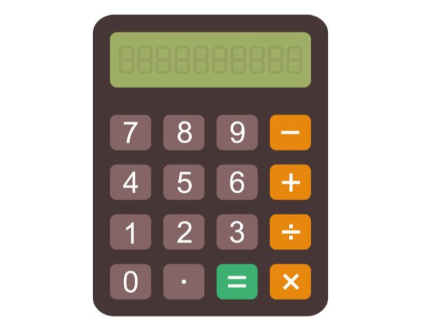
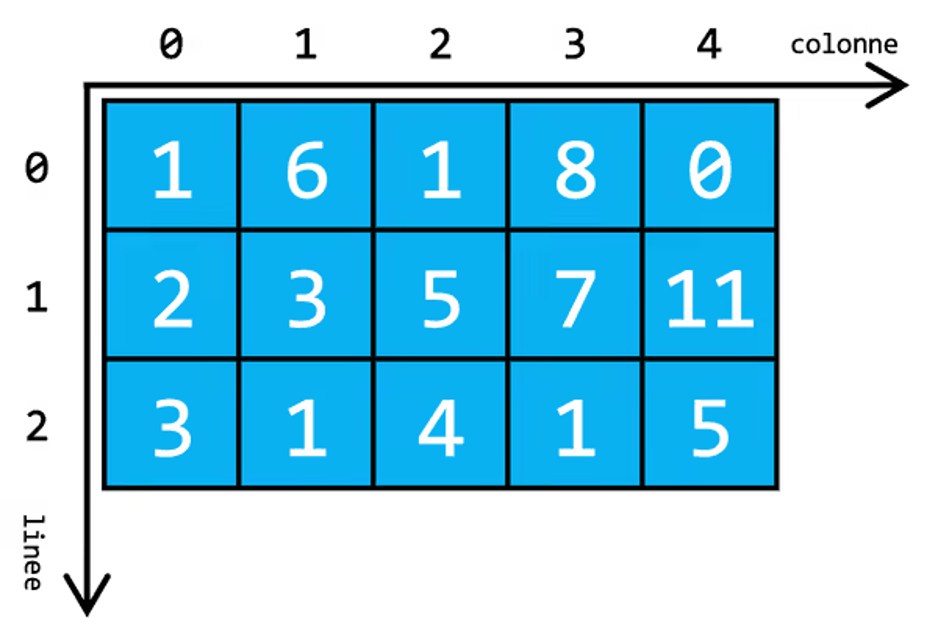
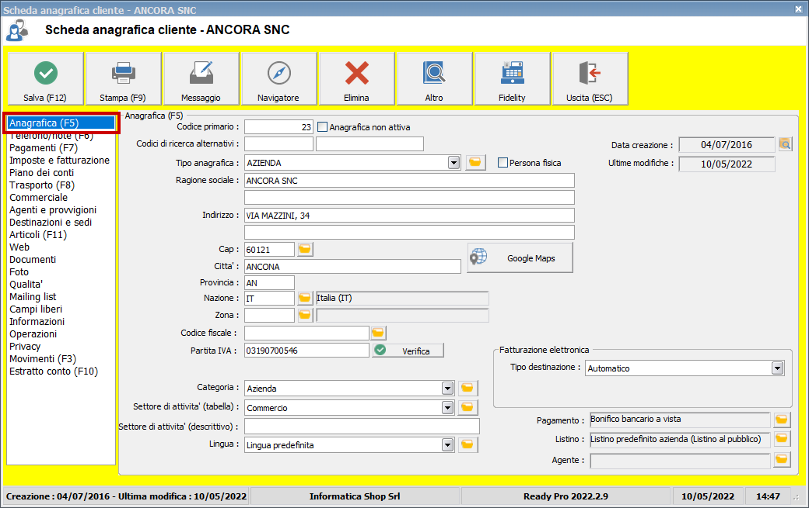

Qui di seguito sono esposte tutte le pagine web che ho realizzato durante il quarto anno

In questo sito è presente una prima versione di una calcolatrice che permette di eseguire solo le quattro operazioni fondamentali
Realizzato con HTML, css e javascript
In questo sito è presente una seconda versione di una calcolatrice che implementa alcune funzioni matematiche alla versione precedente
In questo sito è presente una terza versione di una calcolatrice che copia quella del sistema di windows 11

In questo sito sono presenti un input di testo e un bottone per generare una matrice quadrata di lunghezza pari che vada da 4 a 10, due bottoni per riempirla con numeri casuali o ordinati da 0 a lunghezza2 −1, e un bottone per ruotare i quadrati bianchi della matrice di 90 gradi in senso orario e quelli azzurri in senso antiorario

In questo sito è presente un form di anagrafica che permette di inserire i dati di un utente salvarli in una matrice e implementarli in una tabella dinamica
In questo sito è presente una seconda versione del sito precedente che permette di inviare i dati salvati in una matrice a un'altra pagina tramite l'uso del local storage
In questo sito è presente un input per file csv o xls dove, una volta caricati, vengono letti tramite l'uso di un oggetto FileReader e visualizzati in una tabella generata all'upload del file
In questo sito è presente una versiona avanzata del sito precedente che, oltre a visualizzare in una tabella il file inserito, permette di visualizzarlo anche in un grafico a linee
Questo è un sito di E-commerce che prevede il login di alcuni utenti pre-registrati, usare: nome: A, cognome: A, user: A, password: a Simulando l'acquisto di vari oggetti d'elettronica.